Appendix 4
Back to Table of Contents.
Some Selected Record Images
1. Hans Sorensen's 1825 birth record (left side above right side):
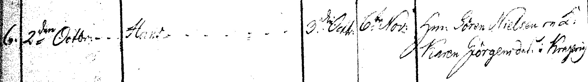
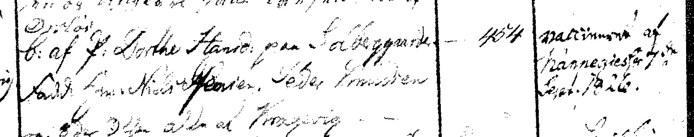
Ørslev Holbæk. Parish records beginning 1812, Opslag [image number] 15, page 14, item 6
2. Hans and Ane's 1848 marriage record (left side above right side):
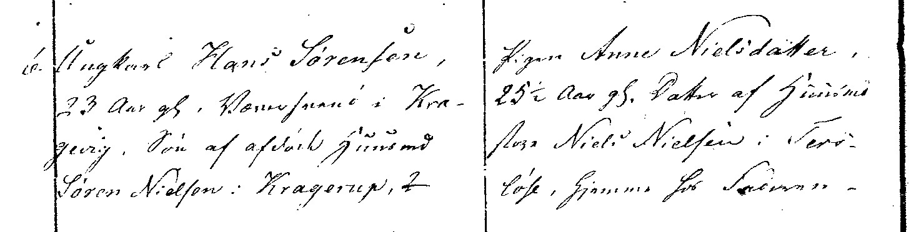
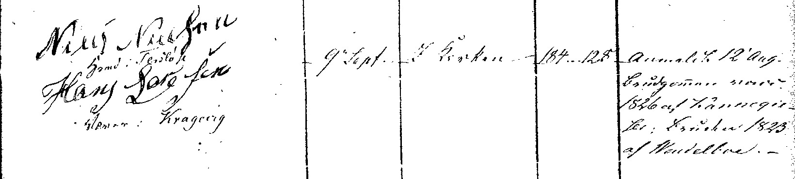
Tersløse Holbæk parish records beginning 1842, Opslag 155; p 158, item 6
3. Hans listed in his Military Levying Roll record of 1846.
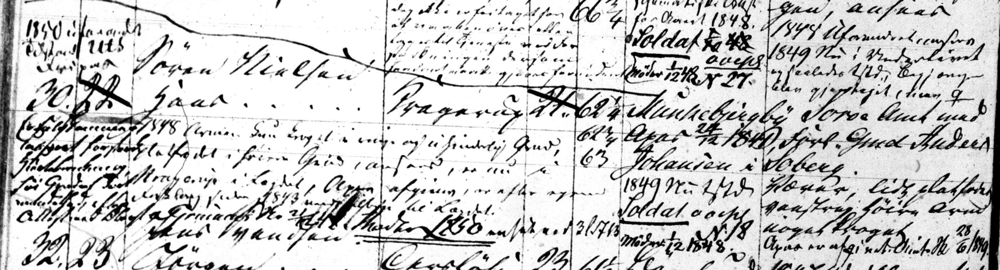
Danish Military Levying Rolls, Ørslev, Holbæk, Denmark, 1846, film 0510120, lægd 67.
4. Aarhus 1870 census (left side over right side):
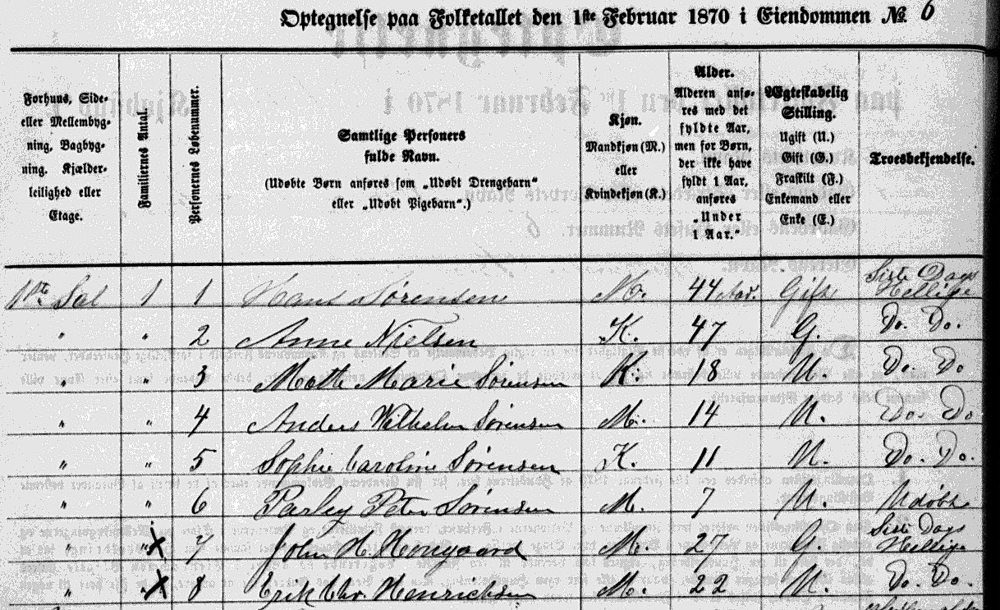
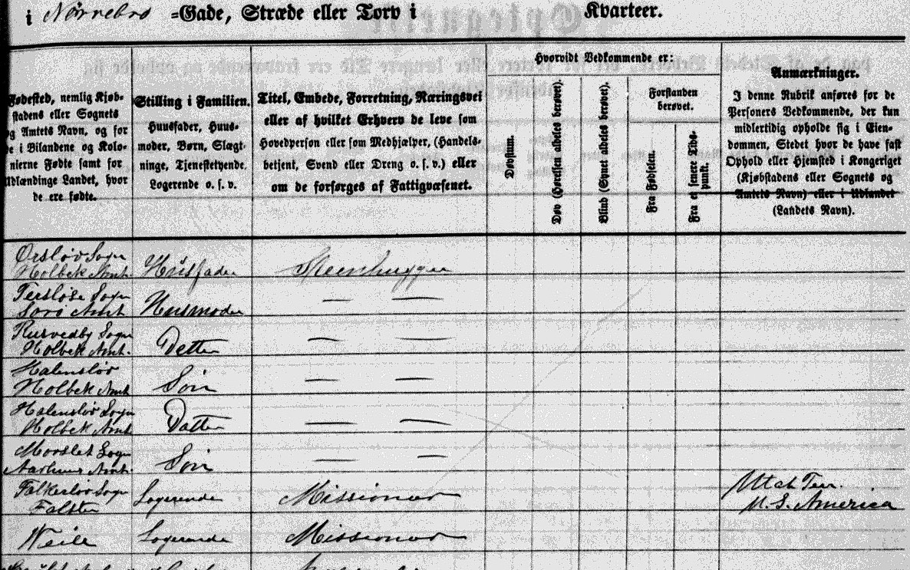
5. Indictment cover and page, 28 Sept. 1889 (Documents page 17, 18):
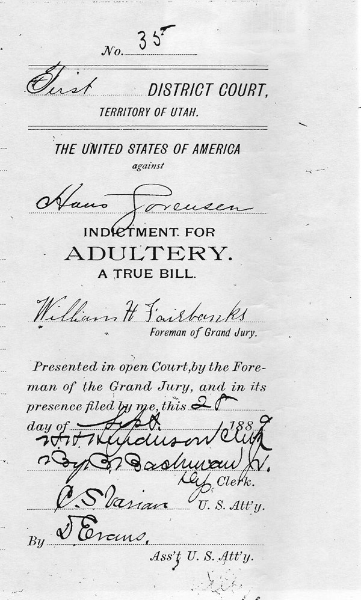
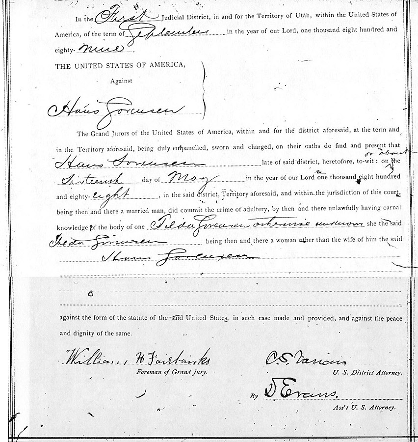
6. The next two are the final arrest warrant and indictment documents (Pages 19, 20):
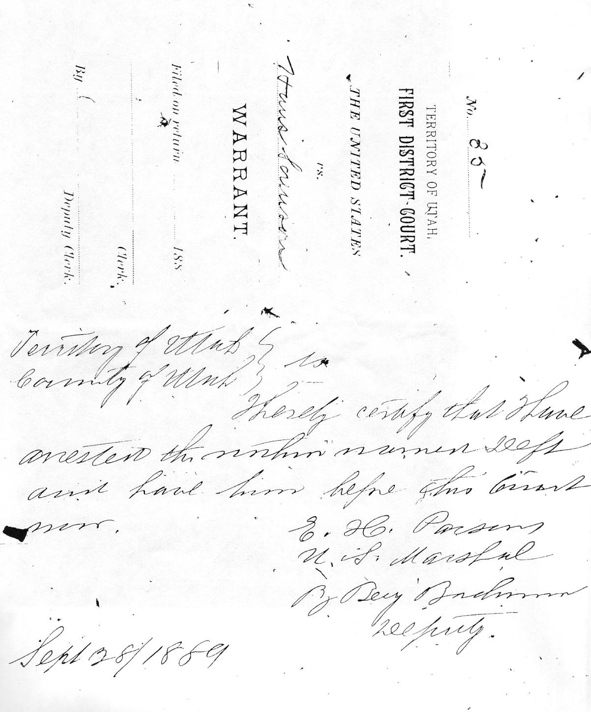
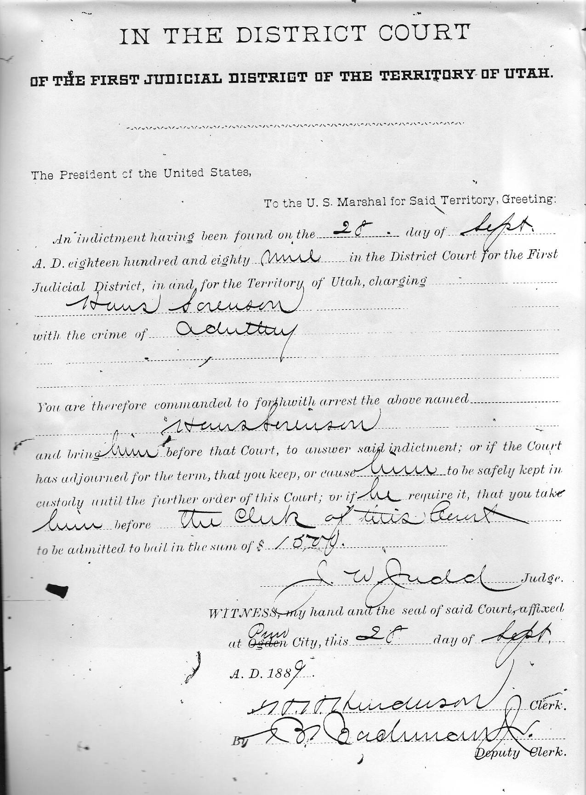